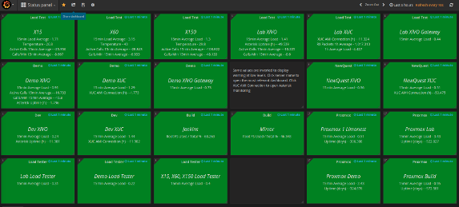
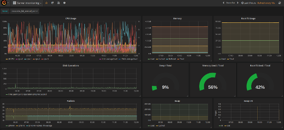

Monitoring et Supervision d'un système de communications
Jean-Pierre Thomasset @ XiVO
Qui sommes-nous ?

- Editeur Open source
- Lyon, Paris, Toulouse, Rennes, Pragues
- Equipe R&D
- Equipe Expert
- Equipe Support
R&D Team
- Principalement des développeurs
- Adepte du TDD
- Wanabee FP
- 0 "DevOps"
XiVO Solution

- IPBX Open Source basé sur Asterisk™
- Gestion des postes téléphonique
- Routage d'appel
- Couplage téléphonie informatique
- Solution pour Centre d'appel
- Solution de communication unifiée
Warning

La supervision
- C'est ennuyant !
- La plupart du temps, ça ne sert à rien
“En supervision, on est des nazes !”
E.A.
(Enfin, surtout personne ne veut le faire)
Alors, pourquoi superviser ?
- Detecter les crash, Vraiment ?
- Detecter les problèmes plus subtils
- Anticiper les problèmes
Mais aussi
- Valider des livrables
- Analyser Post-mortem
- Personne ne veut superviser manuellement
Les raisons chez nous ?

Nos premières tentatives
Home Made

Mais…
- Fonctionnalités limitées
- Difficile à maintenir
- Embarqué sur chaque serveur ⚠
- Pas de consolidation
Evaluation solutions
- Nagios
- Shinken
- Zabbix
- Grafana, Graphite, collectd
Grafana, Graphite, Collectd
- Facilité de déploiement / mise à jour
- Nécessite peu de maintenance
- Collecteurs disponibles directement
- Courbe d'apprentissage rapide
- Basique mais simple
- Developer friendly
Mise en oeuvre
- Docker pour la partie serveur
- `collectd` pour la collecte des mesures génériques
- Push depuis les applications (simple socket)
Metriques
Quelles données ? Quelle pertinence ?
Données non-structurées

Données structurées
- Données horodatées
- Données numériques
- Source
- Categorisation (Naming/Tagging)
Système
- CPU
- Mémoire globale/services
- Espace Disque
- IO
- Failures Disque/IO/…
Environnement
- Etat Trunk SIP
- Etat T2
- Etat Postes
- Glissement d'horloge
Application
- Appels fantomes
- Volume d'appels
- Evénements reçus/traités
- JVM Memory Allocation
- Compteurs internes
Et même l'intégration continue !
- Supervision de la charge générée
- Supervision des mises à jours
Limites
- La supervision n'est pas de la BI
- Distinction entre les données métiers et les données techniques
- Sécurité des données
Ethique

Données personnelles ou sensibles
Stockage
Doit être pensé très tôt.
- Rétention
- Granularité
- La combinaison des deux
Restitution
Deux cas d'usages chez XiVO
Restitution - Dashboard

Supervision haut niveau
Restitution - Detail

Analyse fine de quelques KPIs & Post-mortem
Fiabilisation des données
Un système de supervision est un système qui évolue !
- En fonction des applications
- En fonction des besoins
- En fonction de l'expérience
Nécessaire pour l'alerting !
Alerting
- Ce n'est pas un simple écran de supervision
- A minima par mail
- Passerelles mail vers *
Autres étapes
- Escalade
- Contre-mesures automatisées
Conclusion
- Vrai sujet -> vrai bénéfice
- Investissement nécessaire
- Etape par étape
- C'est l'affaire de tous
- Fun !
One Last Thing…
We ♥ FLOSS !
FLOSS needs $, contributer, reviewer,…
Merci ☺
Question ?